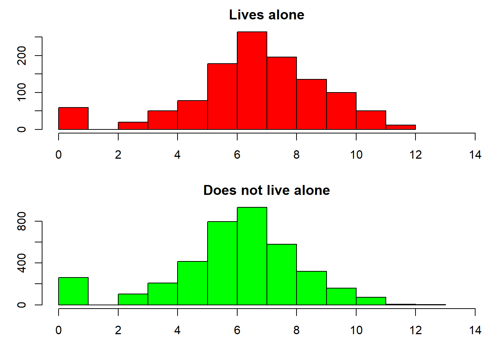

| ID | Age.group | Sex | Number.of.long-term.conditions | Lives.alone | Total.cost |
|---|---|---|---|---|---|
| 1 | 50-64 | Male | 0 | No | £93 |
| 2 | 65-74 | Female | 1 | Yes | £0 |
| 3 | 50-64 | Male | 4 | No | £1065 |
| 4 | 85+ | Female | 5 | Yes | £7210 |
I’ve been working with a group of analysts in East London who are interested in joined-up health and social care data. They’ve created a powerful, unique dataset that shows how each resident of the London Borough of Barking & Dagenham interacts with NHS and council services. The possibilities are enormous, both in terms of understanding the way that people use services across a whole system, and for more general public health research.
You can download a sample of the data https://nhsrcommunity.com/wp-content/uploads/2019/07/sample_lbbd_dataset.csv
Today we’re interested in whether social isolation is related to healthcare costs, and we’re going to use exact matching to explore this issue. Our theory is that people who live alone have higher healthcare costs because they have less support from family members.
Here’s an extract from the data. ‘Total cost’ means the cost of health and social care in one year. The actual dataset has many more variables!
For the purposes of this blog, we’ll use a sample of 5000 (out of 114,000) individuals, with some changes to the values to ensure anonymity.
Descriptive stats
The first thing we’ll look at is whether people who live alone are different. I find descriptive tables fiddly so often use a function that can be re-used across a number of variables:
{data.table} imports the 5000 rows very quickly but note that the object created, d, is a data.table and will act differently to a data.frame or tibble.
# change your working directory to the place you've saved it and build the path to it using the {here} package which locates the RProj file of a project rather than requiring `setwd()` which can often be difficult to use with network drives when the start `\\`
library(data.table) # useful for efficient reading and summarising of data
d <- fread(paste0(here::here(), "/blog/data/sample_lbbd_dataset.csv"))
# describe age, sex and number of long-term conditions
describe.by.isolation <- function(variable) {
a <- table(unlist(d[, variable, with = F]), d$livesalone)
p <- round(prop.table(a, 2) * 100, 0)
matrix(paste0(a, " (", p, ")"), ncol = 2, dimnames = list(row.names(a), c("Live with others", "Lives alone")))
}
lapply(c("age_grp", "sex", "LTC_grp"), describe.by.isolation)[[1]]
Live with others Lives alone
50-64 "2514 (65)" "425 (37)"
65-74 "825 (21)" "277 (24)"
75-84 "370 (10)" "255 (22)"
85+ "150 (4)" "184 (16)"
[[2]]
Live with others Lives alone
Female "1946 (50)" "663 (58)"
Male "1913 (50)" "478 (42)"
[[3]]
Live with others Lives alone
0 "1368 (35)" "305 (27)"
1 "1159 (30)" "329 (29)"
2 "727 (19)" "228 (20)"
3+ "605 (16)" "279 (24)" livesalone mean_cost sd med_cost iqr
<lgcl> <num> <num> <num> <num>
1: FALSE 2367.962 7951.524 469.500 1272.878
2: TRUE 4715.150 11527.056 780.989 2899.131
People who live alone are older, more likely to be female and have more long-term health problems. Their mean healthcare costs are £2,347 higher. The difference in healthcare costs is visible on the histograms, which we have displayed on a log scale because some values are extremely high. There’s some ‘zero inflation’ in both groups – people with no healthcare costs who do not fit into the otherwise lognormal-ish distribution. So far not too surprising – but are the increased healthcare costs explained by the differences in age, sex and health?
Regression
One approach would be to use regression. We could fit a linear model – this is actually not a great fit for patients with higher healthcare costs, but we won’t go into that here.
summary(linear_model)
Call:
lm(formula = cost ~ livesalone + age_grp + sex + LTC_grp, data = d)
Residuals:
Min 1Q Median 3Q Max
-12101 -2540 -847 -97 167419
Coefficients:
Estimate Std. Error t value Pr(>|t|)
(Intercept) 621.0 257.2 2.415 0.01579 *
livesaloneTRUE 891.7 300.8 2.965 0.00305 **
age_grp65-74 287.6 307.5 0.935 0.34962
age_grp75-84 1928.9 395.0 4.884 1.07e-06 ***
age_grp85+ 5809.5 518.4 11.208 < 2e-16 ***
sexMale -424.8 242.5 -1.752 0.07985 .
LTC_grp1 733.6 305.2 2.403 0.01629 *
LTC_grp2 2572.9 350.6 7.339 2.51e-13 ***
LTC_grp3+ 4977.0 372.0 13.381 < 2e-16 ***
---
Signif. codes: 0 '***' 0.001 '**' 0.01 '*' 0.05 '.' 0.1 ' ' 1
Residual standard error: 8522 on 4991 degrees of freedom
Multiple R-squared: 0.09449, Adjusted R-squared: 0.09304
F-statistic: 65.1 on 8 and 4991 DF, p-value: < 2.2e-16The results suggest that health and care costs for people who live alone are £892 more than those who do not live alone, on average. Clearly the variables we added to the model are important confounders, as this is much lower than the ‘crude’ difference of £2,347. Two limitations of this approach are that we will have to think quite carefully about the fit of the model to the data, and that we can’t describe how living alone affects the distribution of costs.
Exact matching
We therefore used exact matching, in which each individual who lives alone is matched to an individual who does not live alone, based on specified variables such as age group and sex. We developed a function that does this by stratifying the data and then matching ‘cases’ and ‘controls’ randomly. Unmatched individuals are deleted from the dataset, leaving a dataset that is balanced in terms of the variables you specify. Let me know here if there’s any other functionality you want and we can try and incorporate it.
Let’s try matching on age group, sex and the grouped number of long-term conditions:
#' @param data dataset containing:
#' @param treat treatment/exposure variable 'mvar' (a string specifying variable name).
#' @param mvar matching variable 'mvar' (a string specifying variable name). If you want to match on multiple variables, concatenate them first.
#' @param ratio controls (an integer > 0)
#' @param seed for fixing random selection of cases/controls (an integer; default NULL means no seed). Choice of seed is arbitrary.
#'
#' @return data.table of matched observations, with additional variable 'id' for use in paired/grouped analyses
smatch <- function(data, treat, mvar, ratio = 1, seed = NULL) {
setnames(data, mvar, ".mvar")
targ <- data[, .(case = sum(get(treat)), control = sum(!get(treat))), .mvar]
targ[, cst := floor(pmin(control / ratio, case))]
targ[, cnt := cst * ratio]
targ <- targ[cst > 0]
l2 <- cumsum(targ$cst)
ids <- mapply(":", c(0, l2[-nrow(targ)]), l2 - 1)
names(ids) <- targ$.mvar
case <- NULL
control <- NULL
x <- withr::with_preserve_seed(runif(seed))
for (i in targ$.mvar) {
case[[i]] <- data[get(treat) == T & .mvar == i][sample(.N, targ$cst[targ$.mvar == i])]
case[[i]][, id := ids[[i]]]
control[[i]] <- data[get(treat) == F & .mvar == i][sample(.N, targ$cnt[targ$.mvar == i])]
control[[i]][, id := rep(ids[[i]], each = ratio)]
}
rbindlist(c(case, control))
}
# create a single variable summarising matching variables
d$mvar <- do.call("paste0", d[, c("age_grp", "sex", "LTC_grp")])
# create 1:1 matched dataset.
matched_data <- smatch(d, treat = "livesalone", mvar = "mvar", ratio = 1, seed = 74)
# check balance: same number of individuals in each group
dcast(matched_data, age_grp + sex + LTC_grp ~ livesalone, value.var = "id", fun.aggregate = length)Key: <age_grp, sex, LTC_grp>
age_grp sex LTC_grp FALSE TRUE
<char> <char> <char> <int> <int>
1: 50-64 Female 0 62 62
2: 50-64 Female 1 65 65
3: 50-64 Female 2 31 31
4: 50-64 Female 3+ 24 24
5: 50-64 Male 0 100 100
6: 50-64 Male 1 76 76
7: 50-64 Male 2 40 40
8: 50-64 Male 3+ 27 27
9: 65-74 Female 0 39 39
10: 65-74 Female 1 46 46
11: 65-74 Female 2 31 31
12: 65-74 Female 3+ 41 41
13: 65-74 Male 0 32 32
14: 65-74 Male 1 34 34
15: 65-74 Male 2 22 22
16: 65-74 Male 3+ 32 32
17: 75-84 Female 0 30 30
18: 75-84 Female 1 45 45
19: 75-84 Female 2 38 38
20: 75-84 Female 3+ 58 58
21: 75-84 Male 0 10 10
22: 75-84 Male 1 24 24
23: 75-84 Male 2 15 15
24: 75-84 Male 3+ 27 27
25: 85+ Female 0 11 11
26: 85+ Female 1 19 19
27: 85+ Female 2 11 11
28: 85+ Female 3+ 23 23
29: 85+ Male 0 5 5
30: 85+ Male 1 8 8
31: 85+ Male 2 13 13
32: 85+ Male 3+ 13 13
age_grp sex LTC_grp FALSE TRUENow we have a dataset that is balanced in terms of age, sex and the count of long-term conditions. Let’s see how healthcare costs compare:
livesalone mean_cost sd med_cost iqr
<lgcl> <num> <num> <num> <num>
1: TRUE 4248.037 10804.742 730.1007 2469.241
2: FALSE 3383.810 9362.913 669.2357 1967.224# histograms of cost
par(mfrow = c(2, 1), mar = c(3, 3, 2, 0))
hist(log(matched_data$cost[d$livesalone] + 1), main = "Lives alone", xlab = "Log cost + 1", col = "red", xlim = c(0, 14))
hist(log(matched_data$cost[!d$livesalone] + 1), main = "Does not live alone", xlab = "Log cost + 1", col = "green", xlim = c(0, 14))# t-test (in reality you might want a paired test, and to check whether a t-test is appropriate)
t.test(cost ~ livesalone, matched_data) # notice how wide the confidence intervals are for this reduced dataset
Welch Two Sample t-test
data: cost by livesalone
t = -1.9606, df = 2060.3, p-value = 0.05006
alternative hypothesis: true difference in means between group FALSE and group TRUE is not equal to 0
95 percent confidence interval:
-1728.6837721 0.2281226
sample estimates:
mean in group FALSE mean in group TRUE
3383.810 4248.037 # proportion with costs over £10000
matched_data[, .(over10k = sum(cost > 10000) / .N), livesalone] livesalone over10k
<lgcl> <num>
1: TRUE 0.10551331
2: FALSE 0.08555133The mean difference is £803. When we used the whole dataset, this value was even closer to the coefficient from linear regression. It’s now difficult to see a difference in the histograms, but you can easily create any description of the distribution that you like – for example the proportion of patients that have costs over £10,000.
Who got matched and who didn’t?
The point of matching was to create a comparison group of people who don’t live alone who were in some ways similar to the group who do. We probably had to delete lots of people who don’t live alone in a systematic way (for example men and younger people who do not live alone were more likely to be deleted). We might also have deleted some of the group who do live alone, which could be more problematic if we want to generalise our results to the population. Let’s see who got deleted…
d[, matched := ifelse(PID %in% matched_data$PID, "matched", "unmatched")]
# just looking at age group for now
compare_matched <- dcast(d, age_grp ~ livesalone + matched, value.var = "PID")
compare_matched[, "TRUE_total" := TRUE_matched + TRUE_unmatched]
compare_matched[, lapply(.SD, function(x) x / sum(x) * 100), .SDcols = 2:6] FALSE_matched FALSE_unmatched TRUE_matched TRUE_unmatched TRUE_total
<num> <num> <num> <num> <num>
1: 40.399240 74.421090 40.399240 0.000000 37.24803
2: 26.330798 19.522622 26.330798 0.000000 24.27695
3: 23.479087 4.381902 23.479087 8.988764 22.34882
4: 9.790875 1.674385 9.790875 91.011236 16.12621You can see that some of the ‘lives alone’ group got deleted (TRUE_unmatched), and they were all in the older age groups. The difference between everyone who lives alone (TRUE_total) and the matched group (TRUE_matched) is diluted, because the oldest groups are a relatively small part of the data. Nonetheless, I would say this is a fairly important difference. If you are concerned about generalisability to the population, you might want to restrict the analysis to people aged under 85. In the full dataset this was not be a problem (as there were lots more potential ‘controls’), but you might encounter similar issues if you match on more detailed variables.
Final point! We’ve focused on a technical solution to exact matching. We haven’t really thought about which variables we should be matching on. This is a matter of judgement, and needs a bit of thinking before we dive into the matching process. Just like covariates in regression, the matching variables are confounders – they’re alternative explanations for an association between living alone and healthcare costs. Age and sex are clearly important. Health status is more complex. Do you want to think about long-term conditions as something that cause people to live alone, or the product of living alone? If people are sicker because they live alone, matching on the number of long term conditions might falsely reduce the association between living alone and healthcare costs.
This blog was written by Dan Lewer, NIHR Doctoral Research Fellow / SpR Public Health. Department of Epidemiology & Public Health, UCL
This blog has been formatted to remove Latin Abbreviations.